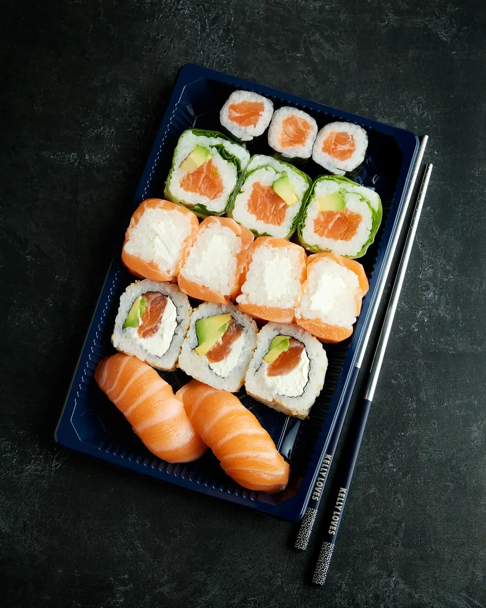

Выбирай
Роллы, суши или сет — добавь любимое в корзину.
РОЛЛЫ. ДРУЗЬЯ. ХОРОШИЙ ВЕЧЕР.
Собери любимые роллы, позови своих.
Повод уже есть.

НАШЕ МЕНЮ
От любимой классики до хрустящей темпуры. Выбирай под своё настроение.
Демонстрационное меню. Фотографии иллюстративные; состав и цены указаны для примера.
ВЕЧЕР ДЛЯ ДВОИХ
24 кусочка — и ни одного повода скучать.
ВЫБИРАЙ БОЛЬШЕ
Сеты для тех самых встреч, которые хочется повторить.
ВСЁ ПРОСТО
Роллы, суши или сет — добавь любимое в корзину.
Измени количество и выбери способ получения.
Посмотри итог заказа. В этой версии заявка не отправляется.
ЕСТЬ ВОПРОС?
Нет. NORI — вымышленный бренд и демонстрация сайта для портфолио. Заказы здесь не принимаются.
Фильтры меню, поиск, карточки блюд, корзина, изменение количества и демонстрационное оформление заказа.
Да, в демоформе можно переключиться между доставкой и самовывозом. Введённые данные никуда не отправляются.